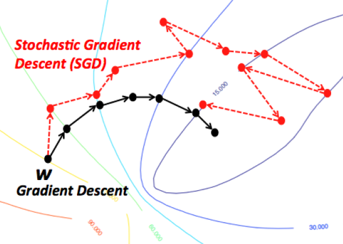
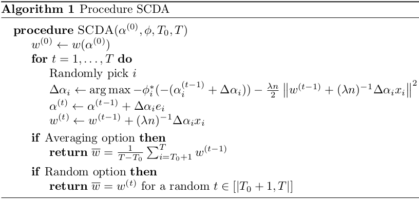
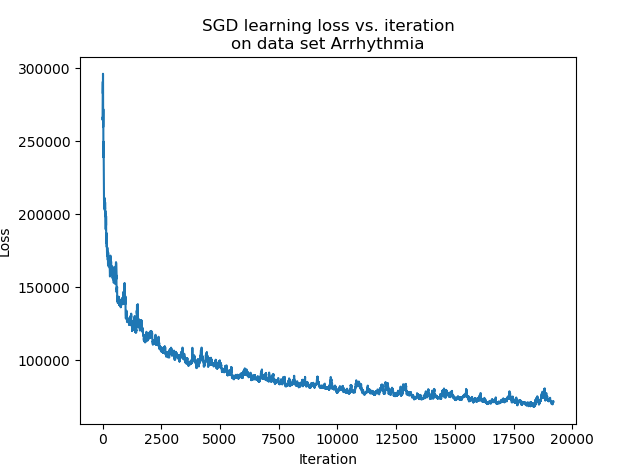
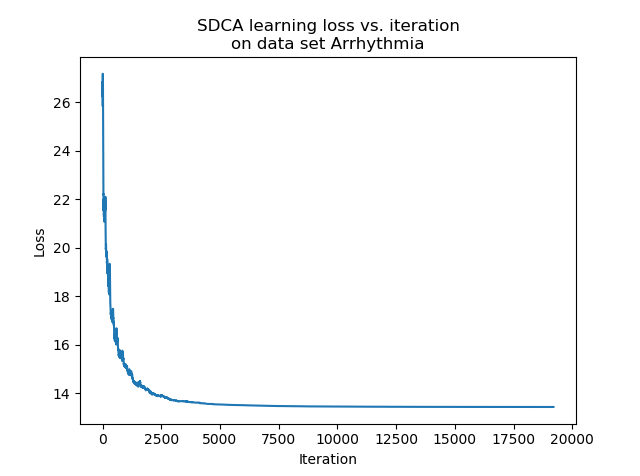
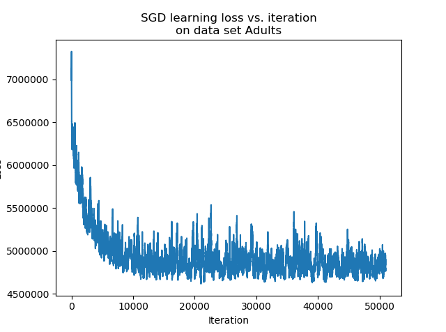
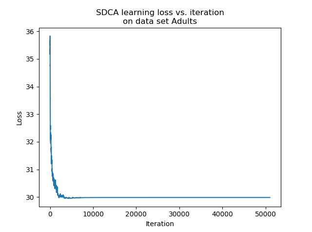
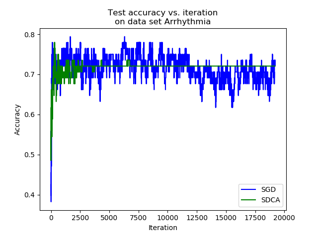
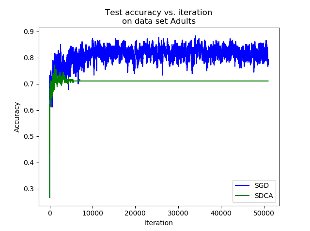

An alternative to Stochastic Gradient Descent for high-dimensional data

Introduction
In machine learning, the process of fitting a model to the data requires to solve an optimization problem. The difficulty resides in the fact that this optimization quickly becomes very complex when dealing with real problems. The Stochastic Gradient Descent (SGD) is a very popular algorithm to solve those problems because it has good convergence guaranties. Yet, the SGD does not have a good stopping criteria, and its solutions are often not accurate enough.
The Stochastic Dual Coordinate Ascent (SDCA) tries to solve the optimization problem by solving its dual problem. Instead of optimizing the weights, we optimize a dual variable from which we can compute the weights and thus solve the former. This method can give good results for specific problems: for instance, solving the dual problem of the SVM has proven to be effective and to give interesting results, with a linear convergence in some cases.
In this report, we compile the key theoretical points necessary to have a global understanding of the SDCA. First we introduce the SDCA and its principles. We then present the machine learning problem our report focuses on, and we study computational performances of the method by trying to apply SDCA on concrete problems. Finally we conclude on SDCA strengths and weaknesses.
Purpose of the report: a new SGD-like method
Difference between SGD and SDCA
A simple approach for solving Support Vector Machine learning is Stochastic Gradient Descent (SGD). SGD finds an $\epsilon_P$-sub-optimal solution in time $O(1/(\lambda \epsilon_P))$. We say that a solution $w$ is $\epsilon_P$-sub-optimal if $P(w) - P(w^{*}) \leq \epsilon_P$, where $P$ is the objective function of the primal problem. This runtime does not depend on $n$ and therefore is favorable when $n$ is very large. However, as explained in the studied articles, the SGD approach has several disadvantages:
- it does not have a clear stopping criterion
- it tends to be too aggressive at the beginning of the optimization process, especially when $\lambda$ is very small
- while SGD reaches a moderate accuracy quite fast, its convergence becomes rather slow when we are interested in more accurate solutions
Therefore, an alternative approach is Dual Coordinate Ascent (DCA), which solves the dual problem instead of the primal problem.
Formulation of SDCA optimization problem
Let $x_1, \dots, x_n \in \mathbb{R}^d$, $\phi_1, \dots, \phi_n$ scalar convex functions, $\lambda > 0$ regularization parameter. Let us focus on the following optimization problem:
$$\min_{w \in \mathbb{R}^d} P(w) = \left[ \dfrac{1}{n} \sum_{i=1}^n \phi_i(w^\top x_i) + \dfrac{\lambda}{2}||w||^2 \right]$$
with solution $w^{*} = \arg \min_{w \in \mathbb{R}^d} P(w)$.
Moreover, we say that a solution $w$ is $\epsilon_P$-sub-optimal if $P(w) - P(w^{*}) \leq \epsilon_P$. We analyze here the required runtime to find an $\epsilon_P$-sub-optimal solution using SDCA.
Let $\phi_i^{*} : \mathbb{R} \rightarrow \mathbb{R}$ be the convex conjugate of $\phi_i$ : $\phi_i^{*}(u) = \max_z (zu-\phi_i(z))$. The dual problem of … is defined as follows:
$$\max_{\alpha \in \mathbb{R}^n} D(\alpha) = \dfrac{1}{n} \sum_{i=1}^n -\phi_i^{*}(-\alpha_i) - \dfrac{\lambda}{2}||\dfrac{1}{\lambda n}\sum_{i=1}^n \alpha_ix_i||^2$$
with solution $\alpha^{*} = \arg \max_{a \in \mathbb{R}^n} D(\alpha)$.
Moreover, if we define $w(\alpha) = \frac{1}{\lambda n} \sum_{i=1}^n \alpha_ix_i$, thanks to classic optimization results, we then have:
$$w(\alpha^{*}) = w^{*}$$
$$P(w^{*}) = D(\alpha^{*})$$
We also define the duality gap as $P(w(\alpha)) - D(\alpha)$. The SDCA procedure is described in Section 1.4.
Focus on the logistic regression
In order to fully grasp the method behind the first paper, let's take an example with the logistic regression. We will consider logistic regression only for binary classification. We use the following usual notations: $X \in \mathbf{X} = \mathbb{R}^p$ the random variable for the description space, and $Y \in \mathbf{Y} = \{-1, 1\}$ the random variable for the label. We recall that the model is the following:
$$\frac{\mathbb{P}(y=1 | X=x)}{\mathbb{P}(y=-1 |X=x)} = w^\top x, \quad w \in \mathbb{R}^p$$
We want to find $w$ such that it maximizes the likelihood, or log-likelihood, with a term of regularization:
$$\min_w C \sum_i \log\left(1 + e^{-y_iw^\top x_i}\right) + \frac{1}{2} w^\top w$$
In order to get the dual problem, we rewrite it with an artificial constraint $z_i = y_iw^Tx_i$, and we have the following Lagrangian:
$$\mathcal{L}(w, z, \alpha) = \sum_i (C \log\left(1+z_i\right) + \alpha_i z_i) - \sum_i \alpha_i e^{-z_i} + \frac{1}{2}w^\top w$$
We will note $w^* = \sum_i \alpha_i y_i x_i$ and $z^*$ the variables solution of the optimization problem
$$\min_{w, z} \mathcal{L}(w, z, \alpha) = \mathcal{L}(w^*, z^*, \alpha) = \psi(\alpha)$$
In fact, it leads to the following dual problem:
$$\max_{\alpha} \sum_{i \in I} (-\alpha_i \log(\alpha_i) - (C-\alpha_i) \log(C - \alpha_i)) - \frac{1}{2} \alpha^\top Q\alpha$$ $$\text{s.t. } I = \{i,\ 0 < \alpha_i <= C \}$$ $$0 \leq \alpha_i \leq C$$ $$Q_{ij} = y_i x_i^T x_j y_j$$
Now we got the dual problem, we need to solve a maximization problem. To do so, we will use in this paper the coordinate ascent method, which consist in optimizing the objective function coordinate by coordinate (or with groups of coordinates). The SDCA algorithm is described in the next subsection.
SDCA algorithm

Computation of closed forms
In the studied articles, SDCA is computed either for $L$-Lipschitz loss functions or for $(1/\gamma)$-smooth loss functions. We recall that a function $\phi_i : \mathbb{R} \rightarrow \mathbb{R}$ is $L$-Lipschitz if $\forall a,b \in \mathbb{R}$, $|\phi_i(a)-\phi_i(b)| \leq L |a-b|$, and that a function $\phi_i : \mathbb{R} \rightarrow \mathbb{R}$ is $(1/\gamma)$-smooth if it is differentiable and its derivative is $(1/\gamma)$-Lipschitz. Moreover, if $\phi_i$ is $(1/\gamma)$-smooth, then $\phi_i^{*}$ is $\gamma$-strongly convex. The different loss functions used are described in the table below. For experimentation, we mainly focused on log loss and square loss.
Algorithm termination
For the sake of simplicity, the studied articles consider the following assumptions: $\forall i, ||x_i|| \leq 1$, $\forall (i,a), \phi_i(a) \geq 0$ and $\forall i, \phi_i(0) \leq 1$. Under these assumptions, we have the following theorem:
Theorem Consider Procedure SDCA with $\alpha^{(0)} = 0$. Assume that $\forall i, \phi_i$ is $L$-Lipschitz (resp. $(1/\gamma)$-smooth). To obtain an expected duality gap of $\mathbb{E}[P(\overline{w})-D(\overline{\alpha})] \leq \epsilon_P$, it suffices to have a total number of iterations of
$$T \geq n + \max\left(0, \left\lceil n \log \left(\dfrac{\lambda n}{2 L^2} \right) \right\rceil \right) + \dfrac{20 L^2}{\lambda \epsilon_P} \quad \left( \text{resp. } T > \left(n + \dfrac{1}{\lambda \gamma} \right) \log \left[ \dfrac{1}{(T-T_0)\epsilon_P} \left(n + \dfrac{1}{\lambda \gamma} \right) \right] \right)$$
Experiments
Implementation
We implemented:
- Estimator objects that can fit, predict and score themselves: logistic loss and square loss
- Optimizer objects used for fitting: SGD and SDCA
- projections: polynomial and gaussian
- some data utilities
Description of the chosen data sets
We used our implementation on:
- Arrhythmia: https://archive.ics.uci.edu/ml/datasets/Arrhythmia
- Adult: https://archive.ics.uci.edu/ml/datasets/adult
- some other data sets available on scikit-learn: Labeled Faced Wild, Forest covertypes
While the Arrhythmia data set has $452$ instances, which is quite low, it has $279$ features, which is quite high. On the other hand, the Adult data set has $48,842$ instances but only $14$ features.
The Arrhythmia data set will help us to check the properties of SDCA when there are high-dimensional features. The Adult data set will help us to compare the SGD and SDCA when there are a large number of instances.
Use of closed forms and numerical issues
In this report, we used the closed form presented above. The closed form for the logistic regression gave us numerous numerical issues. On some cases, we can end up with catastrophic cancellations due to either the $\log$ or the $\exp$.
A solution that is proposed by another study is to optimize a sub-problem with a modified Newton algorithm for each iteration, and thus avoid catastrophic cancellations. We implemented this modified Newton algorithm and tried to use it for the logistic regression on the data sets described above, but of course computation time was incredibly long comparing to the use of closed forms.
Choice of algorithm termination option
Because of the stochastic behavior of the algorithm, the output is very sensitive to the iteration at which it stops. Indeed, coefficients vary suddenly, and the convergence is not really monotonous: at some point, it is uncertain whether the loss improves or not.
There are essentially two ways of taking this into account. The first method is to stop at a random step, which actually yields good results. The second method consists in averaging the last $\alpha^{(t)}$ obtained by the algorithm, making sure that the local variations of $\alpha$ are corrected.
Another way to stop the algorithm is to use the duality gap. However, as this theorem presents a sufficient condition for the total number of iterations, this number is much higher than the real total number of iterations needed to have an acceptable duality gap.
Considering this analysis, we decided to choose the average output option and to set manually the number of iterations needed for our experimentation. As explained in the studied articles, we can note that this stopping time $T_0$ can be chosen between $1$ to $T$, and is generally chosen equal to $T/2$. However, in practice, these parameters are not required as the duality gap is used to terminate the algorithm.
Choice of hyperparameters
The SGD has two hyperparameters $c$ and $eps$ while the SDCA has only one hyperparameter $c$. In order to compare the algorithms, we chose to select the best hyperparameters for each optimizer and for each data set using a validation procedure with a learning set and a validation set. On every data set, for each hyperparameter, we computed the accuracy after a given number of epochs for a range of values and a certain validation set, and plotted them. We selected the following hyperparameter values:
| Dataset | SGD $c$ | SGD $eps$ | SDCA $c$ |
|---|---|---|---|
| Arrhythmia | $10^3$ | $10^{-5}$ | $10^{-1}$ |
| Adults | $10^4$ | $5 \cdot 10^{-6}$ | $5 \cdot 10^{-2}$ |
Stopping time
With such data sets and hyper parameters, we compute the sufficient stopping time for a dual gap lower than $10^{-3}$.
| Dataset | Sufficient stopping time |
|---|---|
| Arrhythmia | 401,549 |
| Adults | 629,840 |
These values perfectly illustrate the explanation about the sufficient stopping time condition described previously. In practice, only some tens of thousands, or even less, are sufficient to have a good convergence.
Comparison between SGD and SDCA on used data sets
We fit a logistic regression model on the data sets with the hyper parameters detailed above. On each data set, we used $85$% of the data for training and $15$% of the data for testing.




We can see that after a consequent number of iterations, the accuracy of the estimator trained with the SDCA stops to vary, while the accuracy of the one trained with the SGD continues to vary and reaches better accuracy levels. In practice, it is highly probable that the SDCA gets trapped in a local minimum. Indeed, the structure itself of the algorithm makes it impossible to escape.
While the SGD can perform slight jumps thanks to the learning rate $eps$, the SDCA only optimizes along one coordinate. If it is trapped into a local minimum, it cannot vary anymore.
In our experiment, on the one hand the SGD has a better accuracy than the SDCA. On the other hand, the convergence of the SDCA is much clearer.


Conclusion
In this report, we summarized most of what is needed to understand the SDCA: its goal, its theoretical framework and its algorithm. While our implementation of the SDCA for logistic regression seems to work, it did not yield better performance than SGD for our experiments.
On the other hand, the SGD can keep fluctuating when the SDCA really converges. Depending on the problem, it can be a real advantage. Other tracks need to be investigated in order to improve the performance of the SDCA, such as the resolution of numerical issues for some losses or the use of the SDCA on other data sets.
References
This article is based on two main studies:
- Stochastic Dual Coordinate Ascent Methods for Regularized Loss Minimization (S. Shalev-Shwartz and T. Zhang, 2013) from http://www.jmlr.org/papers/volume14/shalev-shwartz13a/shalev-shwartz13a.pdf was our main interest. This paper compiles many theoretical results on the SDCA and gives a clear algorithm.
- Dual Coordinate Descent Methods for Logistic Regression and Maximum Entropy Models (H.-F. Yu, F.-L. Huang, C.-J. Lin, 2011) from https://www.csie.ntu.edu.tw/~cjlin/papers/maxent_dual.pdf gives interesting insight for the logistic regression case, with a modified Newton method for each iteration step instead of the approximation of the closed form, which helps against the numerical issues.